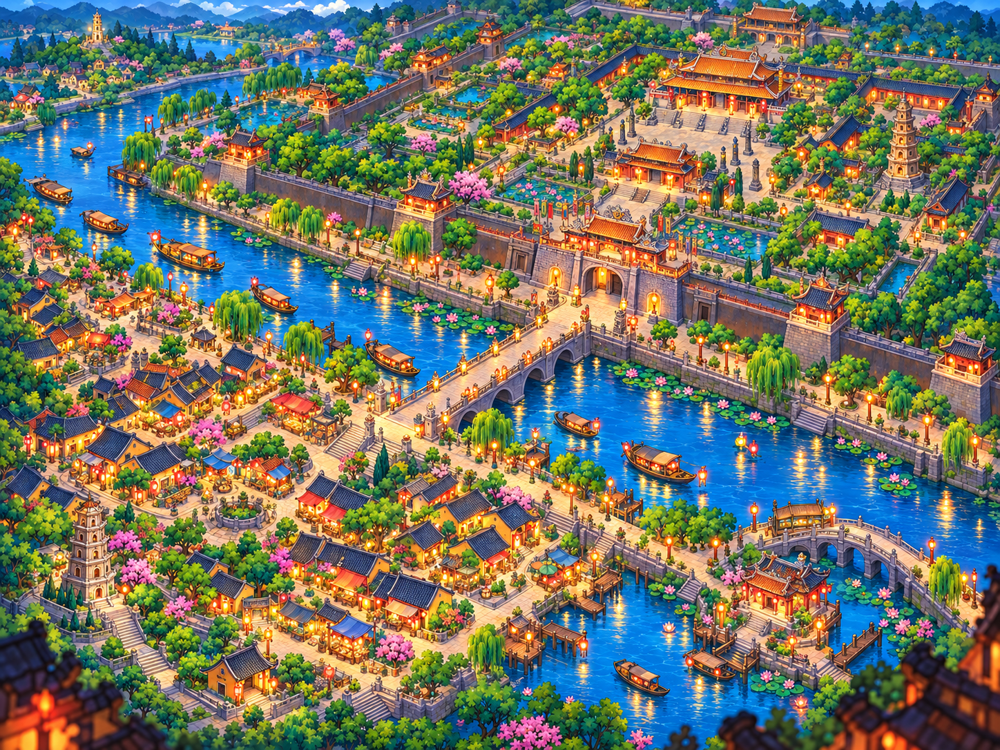
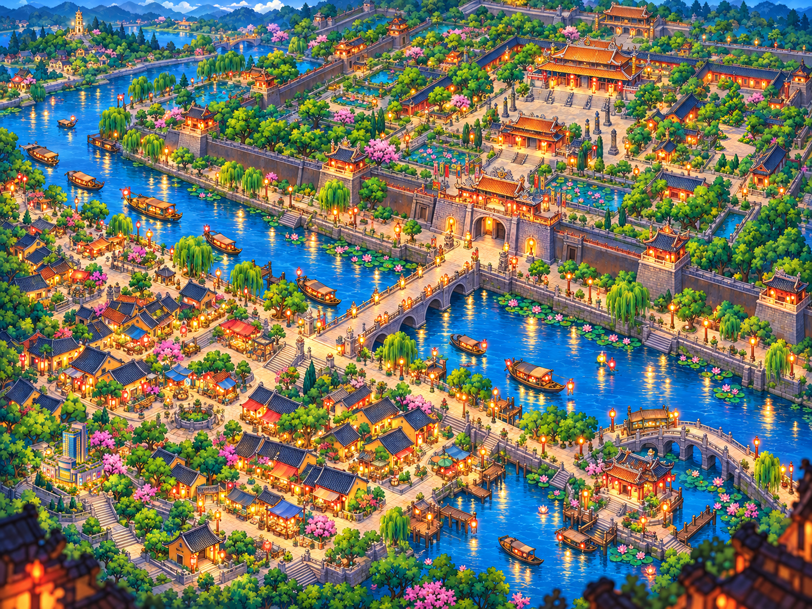
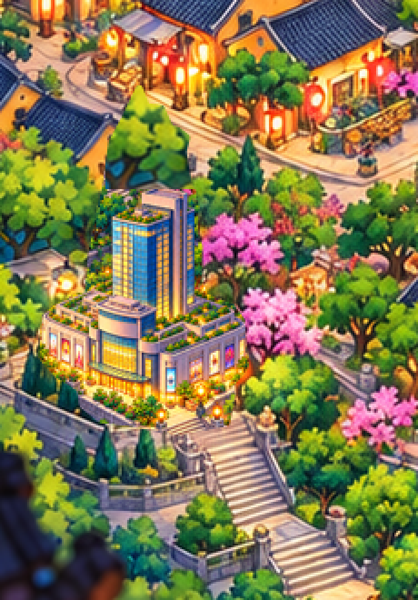
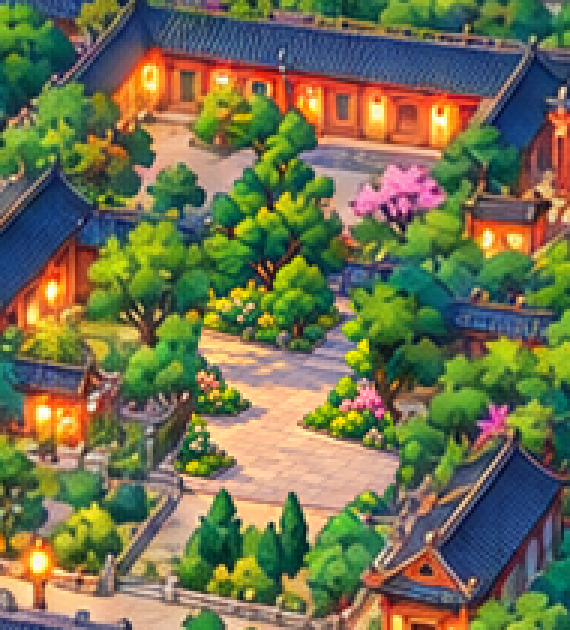

Dưới trái: mẫu Vincom không logo đã được duyệt. Trên phải: bỏ cả tháp lặp và Duyệt Thị Đường, giữ sân/vườn theo yêu cầu mới nhất. Chưa thay asset Unity.




Kiểm tra pixel · Asset/GUID/nguồn · Prompt imagegen